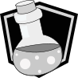
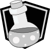

It's Dangerous to Go Alone....Take This!
In this project I have made 10 Icons inpired by the weapons found in The Legend of Zelda, specfically the 3DS title, A Link Between Worlds. I made the icons switch from greyscale to coloured by mousing over the icon and send a message to the console when the icon is clicked.


 
